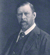

Bram Stoker: Born in Dublin in 1847, Bram Stoker is best remembered as the author of Dracula (1897), a novel that defined the modern vampire myth and became a cornerstone of gothic fiction. Before achieving literary fame, Stoker worked as a civil servant and later as the business manager of the Lyceum Theatre in London.
Dracula combined folklore, Victorian anxieties, and epistolary storytelling to create one of the most enduring horror narratives. Stoker also wrote other novels and short stories, but none achieved the lasting impact of Dracula. His work continues to influence literature, film, and popular culture worldwide.
Works by Stoker
- Dracula (1897)
- The Jewel of Seven Stars (1903)
- The Lady of the Shroud (1909)
- The Lair of the White Worm (1911)
Comments / Suggestions
We want to hear from you! If you have any comments or suggestions on things you'd like to see on the site please
let us know.